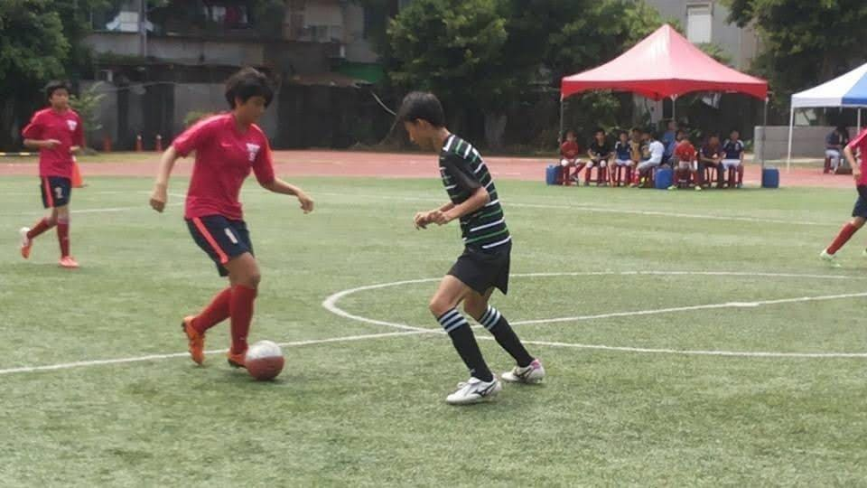
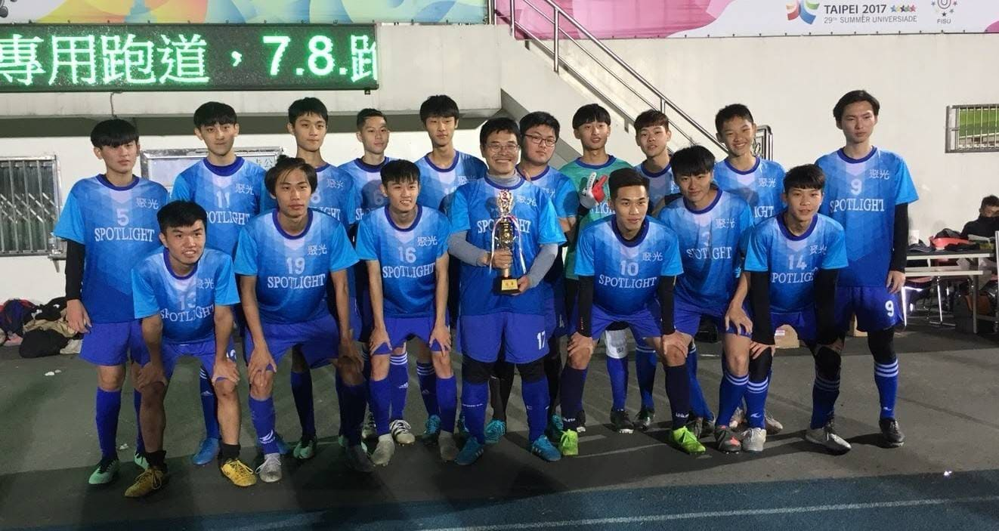
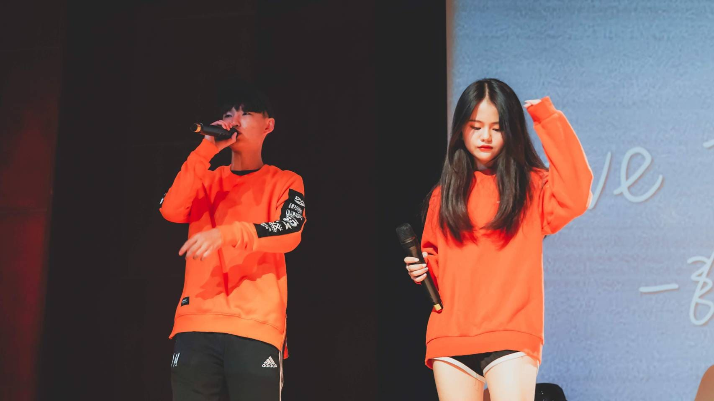
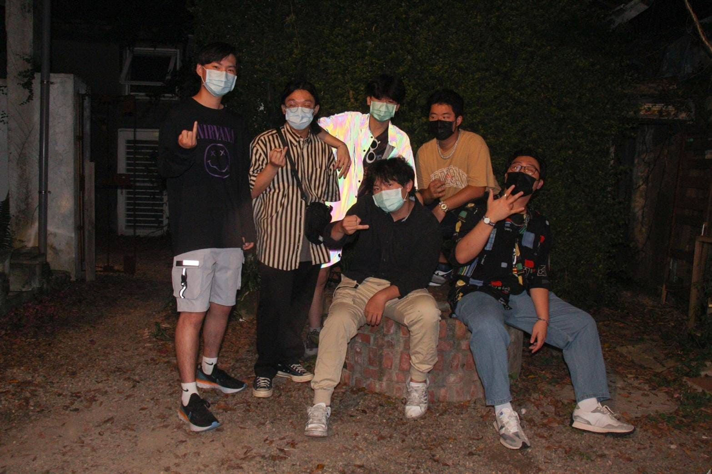
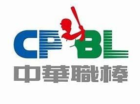
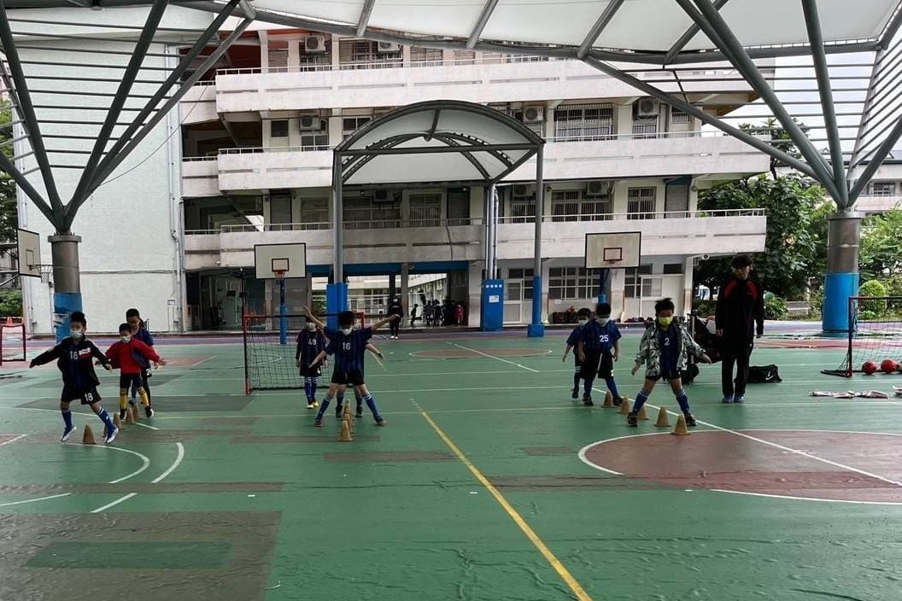
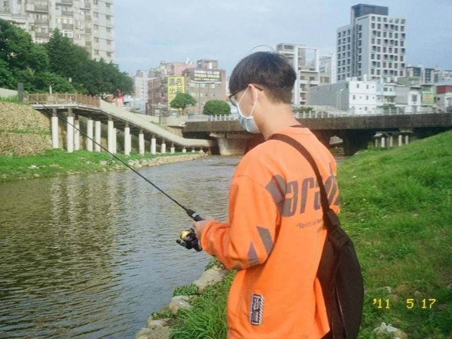
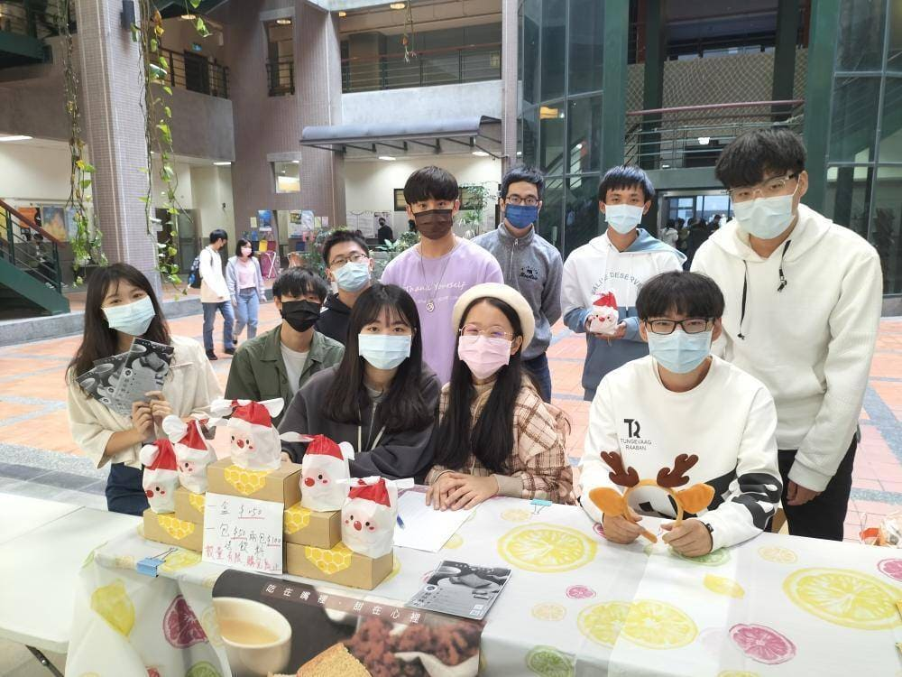
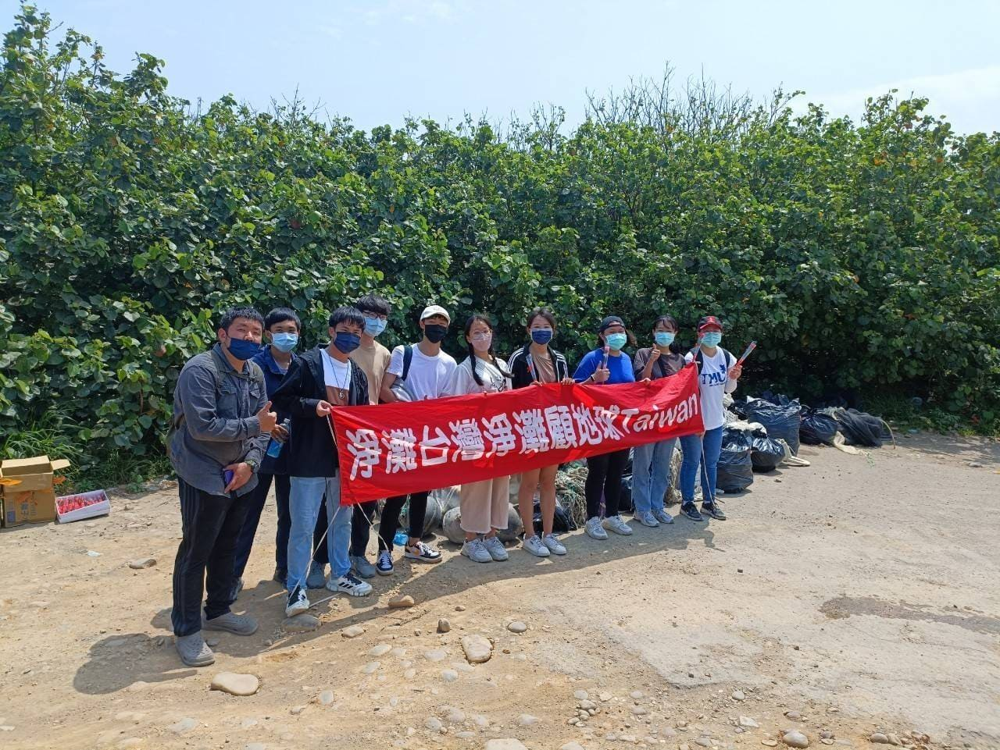

程式技能
HTML
60%
CSS
30%
JAVA
20%
PYTHON
30%
特殊技能
足球
80%
教學指導
60%
饒舌作詞
50%
其他運動
60%
學習經歷

擔任足球校隊副隊長
新北市冠軍、全國第12名

足球新北市冠軍
200公尺第五名

擔任流行音樂社副社長
大隊接力冠軍

嘻哈文化研究社-饒舌組
資管系男排
打工：中華職棒
由於家人都是棒球迷，從小對棒球就耳濡目染，大學有機會到球場當工讀生的機會當然不能放過，這是我人生第一份正式的打工。我被分配到看守停車場的貨梯，不只看不到球賽，也幾乎沒什麼任務，就是在那邊罰站，雖然很無聊但是這就是工作，不管輕鬆或繁雜都要把自己負責的部分做好，才能給球迷舒適的看球體驗。
打工：足球育樂營
國小在足球校隊踢了四年，畢業後也常常回母校幫忙指導學弟，上大學後受到教練的邀請，到學校的育樂營擔任助教，我當初也是從這堂課學會踢球的，沒想到長大後會換個身份回到這裡。教小朋友不只要很有耐心，也要注意課堂的節奏，讓他們可以專心在每項練習，在這裡我學到很多關於帶領小朋友的方法。
興趣：釣魚
小時候爸爸會在暑假帶我去山上釣魚，長大後有了機車可以自己到想要去的地點坐釣，也開始上網學習各種不同的釣魚方法，讓釣魚有更多樂趣。我很喜歡在戶外吹著風看著水面，雖然很熱而且很無聊，但卻能讓我身心放鬆，專注釣魚這項活動，享受搏魚的快感及中魚的喜悅。
企業概論
這堂課是大一上最有挑戰性的一堂課，竟然真的要分組去販售產品，是非常艱難地任務。我在小組擔任CEO的角色，而我們負責銷售的產品是與普仁基金會和微熱山丘合作的蜜豐糖脆蛋糕，透過跟組員的互動我比較懂得如何跟其他成員合作也認知到自己的不足，為了銷售商品主動去向陌生的路人同學推銷，也鼓起勇氣用英文向英聽老師介紹商品，成功讓老師花錢購買，最後也取得不錯的銷售額，把庫存通通賣光光，謝謝我的組員們以及幫助過我們、購買我們產品的所有人。
管理學
我們小組到桃園後厝港埔心溪出海口進行淨灘任務，沒想到這片平凡無奇的沙灘竟然堆滿遍地的垃圾，不只有常見的塑膠瓶、塑膠袋、免洗餐具外，還有令人意想不到的網球、馬桶、各種動物的屍體，由於垃圾量實在多到無法全部都處理，我們只能盡最大的努力讓海灘恢復該有的樣貌，淨灘最大的目的是讓參與的人們意識到環保問題的嚴重性，在生活中減少垃圾產生，並做好回收工作，才是淨灘教會我們的。